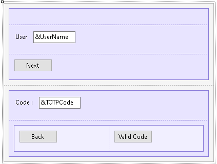

In this article, you will find the steps to use Time Based One Time Password (TOTP) authentication in a mobile application:
First, you must configure a Time Based One Time Password.
After completing the configuration for TOTP authentication, you need to consider the following:
All the Events described below are in the same Panel.
Just like One Time Password (OTP), TOTP runs two core events. The first event validates the user's existence. The second event verifies the user code that is provided by authenticators like Google Authenticator, Microsoft Authenticator, iOS built-in authenticator, WinAuth, and so on.

The logic inside this event will include a call to a method of the Actions external object named LoginExternal.
The first parameter is based on the GAMAuthenticationTypes domain, and its value should be OTP.
The &password parameter is ignored in this case.
The &LoginExternalAdditionalParameters has an AuthenticationTypeName property where you can set the name of the Authentication Type. This is due to the fact that more than one TOTP Authentication Type can be defined in the Repository.
Also, the &LoginExternalAdditionalParameters has the OTPStep which has the value "1" if it is validating the user, and "2" if it is validating the OTP code that the user inserted.
If the LoginExternal method returns True, the event GeneXusSecurity.GAMLoginEvents.OTPAuthenticationRequested is triggered.
This event calls the subroutine "DisplayOTPStep2" to change the inputs of the Panel, so it is prepared to read the TOTP code that the user will insert. Apart from that, this event also warns the user to check the authenticator code.
Event 'BtnNext'
Composite
GeneXus.Common.UI.Progress.ShowWithTitle("Connecting...")
&LoginExternalAdditionalParameters = new()
&LoginExternalAdditionalParameters.AuthenticationTypeName = !"TOTP-FFA"
&LoginExternalAdditionalParameters.OTPStep = 1
&isLoginOK = GeneXus.SD.Actions.LoginExternal(GAMAuthenticationTypes.OTP, &UserName, &Password, &LoginExternalAdditionalParameters)
GeneXus.Common.UI.Progress.Hide()
If &isLoginOK
//OK
Else
GAMSDGetLastErrors(&Messages)
Endif
EndComposite
Endevent
Event GeneXusSecurity.GAMLoginEvents.OTPAuthenticationRequested
Msg("Verify your authenticator code")
Do "DisplayOTPStep2"
&LoginOTPStep = 2
GeneXus.Client.ClientStorage.Set(!'LoginOTP-Step', &LoginOTPStep.ToString())
GeneXus.Client.ClientStorage.Set(!'LoginOTP-UserName', &UserName.Trim())
EndEvent
In this event, the external object method LoginExternal is used to validate the code given by the user. For this reason, the &LoginExternalAdditionalParameters.OTPStep property is defined as "2".
Besides, the &password parameter is changed to &TOTPCode in the LoginExternal method.
Event 'BtnValidCode'
Composite
GeneXus.Common.UI.Progress.ShowWithTitle("Connecting...")
&LoginExternalAdditionalParameters = new()
&LoginExternalAdditionalParameters.AuthenticationTypeName = !"TOTP-FFA"
&LoginExternalAdditionalParameters.OTPStep = 2
GeneXus.SD.Actions.LoginExternal(GAMAuthenticationTypes.OTP, &UserName, &TOTPCode, &LoginExternalAdditionalParameters)
GeneXus.Common.UI.Progress.Hide()
Do "SetOTPStep1"
Return
EndComposite
Endevent
In cases where the app is running in the background, it is important to keep the state of the login process. This means that when users have been verified in the first verification step and received a code, they must be able to open another app to read the code without losing the state of the OTP step that has already been done.
To solve this problem, the "ClientStorage" external object is used.
Event ClientStart &UserName.Enabled = True BtnNext.Visible = True TblCode.Visible = False &LoginOTPStep.FromString(GeneXus.Client.ClientStorage.Get(!'LoginOTP-Step')) If &LoginOTPStep = 2 Do "DisplayOTPStep2" &UserName = GeneXus.Client.ClientStorage.Get(!'LoginOTP-UserName') Endif Endevent
This event calls the subroutine "SetOTPStep1" to cancel the TOTP login process.
Event 'BtnBack' Composite Do "SetOTPStep1" Return EndComposite Endevent
The events described above call two different subroutines.
The "DisplayOTPStep2" subroutine makes changes to the elements of the Panel so that the user can interact either with the username input or the TOTPcode input.
Sub "DisplayOTPStep2" &UserName.Enabled = False BtnNext.Visible = False TblCode.Visible = True EndSub
The "SetOTPStep1" subroutine reset the steps of the OTP login process, leaving the Panel by default.
Sub "SetOTPStep1" &LoginOTPStep = 1 GeneXus.Client.ClientStorage.Set(!'LoginOTP-Step', &LoginOTPStep.ToString()) GeneXus.Client.ClientStorage.Set(!'LoginOTP-UserName', "") EndSub
This feature is available since GeneXus 17 Upgrade 9.
| Backlinks | ||
| GAM - One Time Password for mobile | GAM - Time Based One Time Password (TOTP) | Toc:GeneXus Access Manager (GAM) |